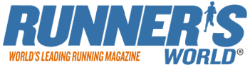

|
Sponsored by . | ||||
The 56th Hyde Park Relays were sponsored by Runner's World, who kindly provided a range of prizes, including subscription to their magazine. Through the years the Hyde Park Relays have attracted many well known sponsors. The race obtains coverage in many sporting journals including Runners World, Athletics Weekly and Today's Runner. If you are interested in sponsoring the event in anyway and would like to know what Hyde Park Relays could do for your company, please contact the committee via the home page. | ||||